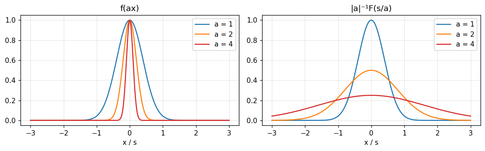
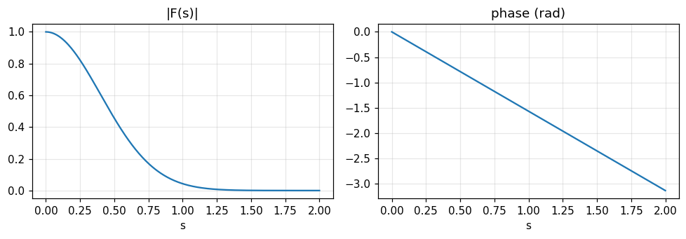
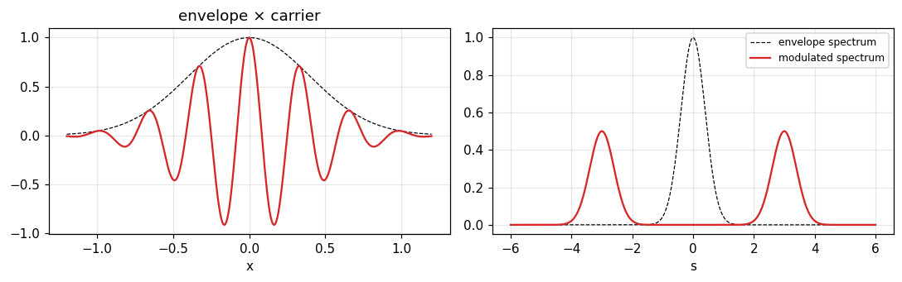
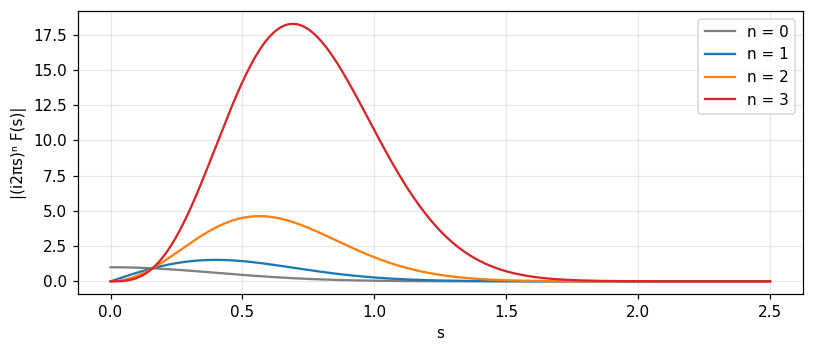

Similarity, addition, shift, modulation, convolution, Rayleigh, power, autocorrelation and derivative: ten theorems that yield most transforms without integrating.
State and use the ten theorems of Table 6.1, including their conditions and symmetric forms.
Derive new transforms from six standard pairs by theorem instead of integration.
Interpret physically: shift is a linear phase, modulation gives two half-strength replicas, convolution multiplies spectra.
Use Rayleigh, power and autocorrelation to connect energy in x with energy in s.
Use the derivative theorem and know how the theorems extend to generalized functions.
Use the buttons, the dots or the ← → keys to move between slides.
PART 1/5
01
Six standard pairs and reciprocity
Situation: To understand the theorems we need a few concrete transform pairs to see what each does.
Complication: These pairs look "too easy" so it is tempting to skip that the direct and inverse directions say different things.
Resolution: Keep six pairs as a stock, plus three pairs in the limit obtained from the Gaussian.
Six reference pairs
Reciprocity: two different statements
Pairs in the limit: 1, e^{i\pi x}, \cos\pi x
1/5 · Six standard pairs and reciprocity
Why there is a "set of theorems"
A small number of theorems play a basic role in thinking with Fourier transforms. Most are familiar in one form or another; here we collect them as simple mathematical properties. Most derivations are simple, and applicability to impulsive functions is verified with sequences of rectangular pulses; proofs through the algebra of generalized functions are gathered at the end of the chapter (Bracewell, p. 105).
1/5 · Six standard pairs and reciprocity
Six reference pairs
The first three are familiar: the self-transforming Gaussian, sinc and the rectangle, sinc^2 and the triangle (pp. 105 to 106):
The other three are pairs in the limit: 1\supset\delta(s), \cos\pi x\supset\mu(s), \sin\pi x\supset i\nu(s). The notebook checks the first three at s=0.3: 0.7537, 0.8584, 0.7368.
1/5 · Six standard pairs and reciprocity
Reciprocity: two different statements
Fig. 6.1 says \Pi(s) is the transform of \text{sinc}\,x; a second figure with left and right interchanged could say sinc s is the transform of \Pi(x), a consequence of reciprocity, but the two statements have different characters. The first says the integral of the product of rather ordinary functions equals 1 for |s|<\tfrac12 and 0 for |s|>\tfrac12, changing abruptly however little s changes (p. 106).
Numerical test: the integral of sinc jumps around |s|=\tfrac12
Cutting the integral at |x|\le200: at s=0.3 we get 0.9984, at s=0.7 we get 0.0011, and right at s=0.5 we get 0.4997, the mean of 1 and 0. Two methods (the oscillatory integral and the formula through \text{Si}) give the same numbers.
1/5 · Six standard pairs and reciprocity
A pair in the limit: 1\supset\delta(s)
From the Gaussian result and a simple substitution: \int e^{-\pi a^2x^2}e^{-i2\pi xs}dx=|a|^{-1}e^{-\pi s^2/a^2}. As a\to0 the right side is a defining sequence for \delta(s) and the left side is the transform of what in the limit is unity. So 1 is the Fourier transform in the limit of \delta(s) (p. 106). Measured: the peak at s=0 is 10 for a=0.1 and 20 for a=0.05.
From \int e^{-\pi a^2x^2}e^{i\pi x}e^{-i2\pi xs}dx=|a|^{-1}e^{-\pi(s-1/2)^2/a^2} we get e^{i\pi x}\supset\delta(s-\tfrac12). Splitting into real and imaginary, even and odd parts: \cos\pi x\supset\mu(s) and i\sin\pi x\supset-\nu(s) (p. 108). Measured: with a Gaussian window a=0.05 the peak of \cos\pi x at s=0.5 has height 10 and area 0.5, exactly \tfrac12\delta(s-\tfrac12).
The chosen pairs exhibit many properties: discontinuity, impulsiveness, limited extent, non-negativeness and oddness. The only complex or nonsymmetrical examples are e^{i\pi x}\supset\delta(s-\tfrac12) and \delta(x-\tfrac12)\supset e^{-i\pi s} (p. 108). All have physical interpretations brought out later.
1/5 · Six standard pairs and reciprocity
Self-check, part 1
Why does \int\text{sinc}\,x\,e^{-i2\pi xs}dx have value 0.4997 at s=0.5?
What is the transform in the limit of \cos\pi x?
How does the peak of the Gaussian sequence |a|^{-1}e^{-\pi s^2/a^2} change as a\to0?
Hints: the mean of the two sides of the jump; the even pair \mu(s); it grows like 1/a and narrows, keeping area 1.
PART 2/5
02
The similarity, addition and shift theorems
Situation: Compressing the time axis, adding two signals or delaying a signal are familiar operations.
Complication: What do they do to the spectrum, and do they conserve area, energy, amplitude?
Resolution: Similarity inverts the two axes, addition preserves linearity, and shift only changes phase linearly with frequency.
Similarity, and conservation of area and energy
Addition and linearity
Shift: linear phase and group delay
2/5 · The similarity, addition and shift theorems
The similarity theorem
If f(x) has transform F(s) then f(ax) has transform |a|^{-1}F(s/a). Proof by the substitution x'=ax (Bracewell, p. 108). The modulus counteracts the interchange of limits when a<0.
Compress one axis and the other expands, with area conserved
Compressing the time scale corresponds to expanding the frequency scale. But as one member expands horizontally the other not only contracts horizontally but also grows vertically so as to keep constant the area beneath it (Fig. 6.2, p. 109). Measured with the Gaussian and a=2: f(2x) has area 0.5; its transform is 0.5 high at 0; at s=0.3 it equals 0.4659, exactly \tfrac12e^{-\pi(0.15)^2}.

Figure 1. The similarity theorem with the Gaussian: as a increases f(ax) narrows (left) while the transform (right) widens and drops by exactly 1/a, so the area beneath is conserved.
2/5 · The similarity, addition and shift theorems
An expanded cosinusoid: the impulses shift, they do not shrink
A special case with periodic functions and impulses: expanding a cosinusoid simply shifts the impulses of the transform. This is not simply a compression of the s scale, for that would reduce the strength of the impulses (Fig. 6.3, pp. 109 to 110). Measured with a Gaussian window a=0.05: the peak of \cos2\pi(2x) at s=2 is 10 high and that of \cos2\pi(4x) at s=4 is also 10 high.
2/5 · The similarity, addition and shift theorems
The symmetric version of the similarity theorem
If f(x) has transform F(s) then |a|^{1/2}f(ax) has transform |b|^{1/2}F(bs) with b=a^{-1}. As each function expands or contracts it also shrinks or grows vertically to compensate, so the integral of its square is maintained constant, as the power theorem will show (Fig. 6.4, p. 110). Measured: \int f^2 = 0.7071 and \int(|a|^{1/2}f(ax))^2 is also 0.7071 for a=2.
If f and g have transforms F and G then f+g has transform F+G. The theorem reflects the suitability of the Fourier transform for linear problems. A corollary: af has transform aF for a constant a (pp. 110 to 111). Measured: the transform of e^{-\pi x^2}+2e^{-|x|} at s=0.3 is 1.6322, exactly the sum of the transforms.
Addition
f(x)+g(x)\ \supset\ F(s)+G(s)
2/5 · The similarity, addition and shift theorems
The shift theorem
If f(x) has transform F(s) then f(x-a) has transform e^{-i2\pi as}F(s) (p. 111). Shifting a function by a in the positive direction changes no Fourier component in amplitude, so the changes in the transform are confined to phase. Measured with the Gaussian shifted by a=0.25 at s=0.3: magnitude 0.7537 (unchanged) and phase -27 degrees, exactly -2\pi as.
Shift
f(x-a)\ \supset\ e^{-i2\pi a s}\,F(s)
2/5 · The similarity, addition and shift theorems
Why the phase is proportional to s
Each component is delayed in phase by an amount proportional to s: the higher the frequency, the greater the change in phase angle. This is because the absolute shift a occupies a greater fraction of the period s^{-1} at higher frequency. The phase delay is a/s^{-1} cycles or 2\pi as radians; the constant 2\pi a is the rate of change of phase with frequency (p. 111). Measured: the slope of the unwrapped phase against s is -1.5708 rad per unit of s, exactly -2\pi a.

Figure 2. Shifting the Gaussian by 0.25: the magnitude |F| (left) keeps its Gaussian shape, while the phase (right) is a straight line of slope −2πa = −π/2 in s.
2/5 · The similarity, addition and shift theorems
A physical example: steering a beam with a prism
The shift theorem is self-evident in a chosen physical embodiment. Consider parallel monochromatic light falling normally on an aperture. To shift the diffracted beam through a small angle, one changes the angle of incidence by that amount. But that is simply a way of making the phase of the illumination change linearly across the aperture; another way is to insert a thin prism that injects delays proportional to the prism thickness at each point (pp. 111 to 112; chapter 13 returns to it).
2/5 · The similarity, addition and shift theorems
Twist: shifting by a quarter twists the transform 90 degrees per unit of s
Take a function whose transform is real. Shifting it by \tfrac14 unit of x corresponds to a uniform twist of \pi/2 per unit of s; the plane containing F(s) is deformed into a helicoid (Fig. 6.6, pp. 112 to 113). Measured: the phase at s=1 is -90 degrees, at s=2 it is 180 degrees (or +180 after wrapping).
2/5 · The similarity, addition and shift theorems
A sliding cosine: from real to imaginary
A small shift of a cosine leaves the real part of the transform almost intact but introduces an odd imaginary part. With further shift the imaginary part increases until at a shift of \pi/2 there is no real part left; then the real part reappears with opposite sign until at a shift of \pi both components have undergone a full reversal (Fig. 6.7, p. 113). The DFT coefficient at the cosine's frequency: 0.995 and -0.0998 (real, imaginary) for a phase shift of 0.1 rad; 0 and -1 for \pi/2; -1 and 0 for \pi.
2/5 · The similarity, addition and shift theorems
Self-check, part 2
If f(3x) is 3 times narrower, how does the transform change in width and height?
What does shifting f by a do to |F| and to the phase?
Why do a tilt of the beam and a prism both steer the beam?
Hints: 3 times wider, 1/3 as high; |F| unchanged, phase gets -2\pi as; because both make the phase change linearly across the aperture.
PART 3/5
03
The modulation and convolution theorems
Situation: Amplitude modulation is how radio and television carry a signal on a carrier wave.
Complication: What does the spectrum of a modulated signal look like, and how do we use convolution to find the spectrum of a product quickly?
Resolution: Multiplying by a cosine splits the spectrum into two half-strength replicas; convolution becomes multiplication of spectra and vice versa.
Modulation: two half-strength replicas
Convolution is spectral multiplication and three checks
The twenty forms of the theorem
3/5 · The modulation and convolution theorems
The modulation theorem
If f(x) has transform F(s) then f(x)\cos\omega x has transform \tfrac12F(s-\omega/2\pi)+\tfrac12F(s+\omega/2\pi) (Bracewell, pp. 113 to 114). The proof writes \cos\omega x through two complex exponentials and applies the shift theorem to the transform.
The new transform is the convolution of F(s) with \tfrac12\delta(s+\omega/2\pi)+\tfrac12\delta(s-\omega/2\pi). In radio and television a harmonic carrier is modulated by an envelope; the spectrum of the envelope separates into two parts, each of half the strength, shifted along the s axis by \pm\omega/2\pi (Fig. 6.8, p. 115). Measured: with a Gaussian envelope and carrier f_0=3, the peak at s=3 is 0.5 high, exactly \tfrac12F(0).

Figure 3. Modulation by a cosine: the spectrum of the Gaussian envelope (dashed) splits into two half-strength replicas at ±3 (red).
3/5 · The modulation and convolution theorems
A radio-frequency pulse: the spectrum is two sinc functions
The pulse \Pi(x/X)\cos2\pi fx has spectrum \tfrac12X\{\text{sinc}[X(s+f)]+\text{sinc}[X(s-f)]\} (problem 8, p. 131). With X=10, f=1: at s=1 the spectrum equals 5; at s=1.05 it equals 3.2607, by both numerical integration and the formula.
An amplitude-modulated pulse: carrier and two sidebands
The pulse \Pi(x/X)(1+M\cos2\pi Fx)\cos2\pi fx has a spectrum with a carrier \tfrac12X\text{sinc} at \pm f and four sidebands of strength \tfrac14MX at \pm f\pm F (problem 9, p. 132). With X=200, f=50, F=5, M=0.6: carrier 100, sideband 30, ratio 0.3, exactly M/2.
3/5 · The modulation and convolution theorems
The convolution theorem
If f has transform F and g has transform G then f*g has transform FG: convolution of two functions means multiplication of their transforms (p. 117). Proof: interchange the order of integration and use the shift theorem.
Convolution
f*g\ \supset\ F\,G,\qquad f\,g\ \supset\ F*G
3/5 · The modulation and convolution theorems
Linearity plus invariance decides when it applies
A train slowly crosses a bridge: the load at x is f(x) and the deflection at x is h(x). Since the members are not pushed beyond the regime where stress is proportional to strain, the deflection is a duly weighted linear combination of the load. But as the train moves on, the deflection pattern does not move with it unchanged, so it is not a convolution. Linearity combined with x-shift invariance is what makes Fourier analysis useful; it is also the condition for harmonic inputs to give harmonic outputs of unaltered frequency (p. 115).
3/5 · The modulation and convolution theorems
Four statements in words
The transform of a convolution is the product of the transforms.
The transform of a product is the convolution of the transforms.
The convolution of two functions is the transform of the product of their transforms.
The product of two functions is the transform of the convolution of their transforms.
With bar notation: \overline{f*g}=\bar f\bar g and \overline{fg}=\bar f*\bar g; also f*g*h\supset FGH (p. 117).
3/5 · The modulation and convolution theorems
Three checks often used
The area under a convolution equals the product of the areas: \int(f*g)=\int f\int g.
The abscissas of the centres of gravity add: \langle x\rangle_{f*g}=\langle x\rangle_f+\langle x\rangle_g.
The second moments add if \langle x\rangle_f or \langle x\rangle_g is 0, i.e. the variances add (p. 118).
Measured with f=e^{-x}H(x) and g=\Pi: area 1, centre of gravity 1, variance 1.0833 =1+1/12.
3/5 · The modulation and convolution theorems
The twenty forms of the theorem
Allowing for complex conjugates and sign reversals of the variables, there are 20 versions of the convolution theorem that are constantly needed. Bracewell lists 10 abbreviated forms (pp. 118 to 119), such as f*g\supset FG, f*g(-)\supset FG(-), f*g^*(-)\supset FG^*, f^*(-)*g^*(-)\supset F^*G^*. The notebook checks 9 of these forms with the DFT on complex sequences, comparing the direct sum with the product of DFTs.
3/5 · The modulation and convolution theorems
The convolution theorem numerically: two ways
For two complex sequences of length 64, the circular convolution computed by the direct sum and by \text{IFFT}(F\cdot G) differ by at most 1.5e-14. That is why the FFT speeds up convolution (modules 3 and 14).
3/5 · The modulation and convolution theorems
Self-check, part 3
What does multiplying by \cos2\pi f_0x do to the spectrum, and how strong is each replica?
Why is the bridge deflection as the train moves not a convolution?
What is the variance of f*g if f has variance 2 and g has variance 3 (unit areas)?
Hints: two half-strength replicas shifted by \pm f_0; because it lacks x-invariance; 5.
PART 4/5
04
Rayleigh, power and autocorrelation
Situation: The energy of a system can be computed by integrating over a coordinate or over spectral components.
Complication: Do the two ways agree, and what about two different functions (voltage and current)?
Resolution: Rayleigh handles the square of one function, power handles the product of two, and autocorrelation handles the transform of the energy spectrum.
Rayleigh's theorem
The power theorem
The autocorrelation theorem
4/5 · Rayleigh, power and autocorrelation
Rayleigh's theorem
The integral of the squared modulus of a function equals the integral of the squared modulus of its spectrum (Bracewell, p. 119). It corresponds to Parseval's theorem for Fourier series and was first used by Rayleigh in 1889 in his study of black-body radiation; each integral represents the energy of a system, one taken over all values of a coordinate, the other over all spectral components (Fig. 6.9, pp. 119 to 120).
In mathematical circles the theorem is called Plancherel's theorem (Titchmarsh, 1924) after M. Plancherel, who in 1910 established conditions under which it is true: it holds if both integrals exist. More recently Carleman showed it is true if one of the integrals exists. Rayleigh simply assumed the integrals existed (p. 120).
4/5 · Rayleigh, power and autocorrelation
Numerical test: two examples
For the Gaussian e^{-\pi x^2}: \int f^2 = 0.7071 and \int|F|^2 = 0.7071. For e^{-x}H(x): \int|f|^2 = 0.5 and \int|F|^2ds=\int ds/(1+4\pi^2s^2) = 0.5. The same numbers by two independent computations.
4/5 · Rayleigh, power and autocorrelation
The power theorem
More general than Rayleigh's, for a product of two functions: \int f\,g^*dx=\int F\,G^*ds. Each side is energy or power computed two ways. In the first, instantaneous power is the product of a pair of canonically conjugate variables (electric and magnetic fields, voltage and current, force and velocity) integrated over time or space. In the second, the spectral components are multiplied and integrated over the whole spectrum (p. 120).
For f=e^{-\pi(x+0.3)^2} and g=e^{-\pi(x-1)^2}: \int fg\,dx = 0.0497 and \int FG^*ds = 0.0497, equal. Here f and g are real so F and G are complex.
4/5 · Rayleigh, power and autocorrelation
For real f, g: real and imaginary parts suffice
If f and g are real then F and G are Hermitian: real parts even, imaginary parts odd. The odd terms do not contribute to the infinite integral, so \int fg\,dx=\int[\text{Re}F\,\text{Re}G+\text{Im}F\,\text{Im}G]ds (Fig. 6.11, p. 121). In the example above the two parts integrate to 0.1886 and -0.1389, summing to 0.0497.
The autocorrelation \int f^*(u)f(u+x)du of f has transform |F(s)|^2. In communications this reads: the autocorrelation function of a signal is the Fourier transform of its power spectrum; Fig. 6.12 illustrates it (p. 122). The distinguishing feature against self-convolution: information about the phase of F(s) is entirely missing from |F|^2, just as the autocorrelation contains no information about the phases of the Fourier components (module 3, p. 45).
Autocorrelation
f\star f\ \supset\ |F(s)|^2
4/5 · Rayleigh, power and autocorrelation
Numerical test: \Pi\star\Pi=\Lambda and the \text{sinc}^2 spectrum
The autocorrelation of \Pi is \Lambda, with transform 0.7368 at s=0.3, exactly \text{sinc}^2(0.3)=|\text{sinc}\,0.3|^2. For the Gaussian, the normalised autocorrelation e^{-\pi x^2/2} has transform \sqrt2e^{-2\pi s^2} with integral 1: the normalised power spectrum whose infinite integral is unity (the book's exercise, p. 122).
4/5 · Rayleigh, power and autocorrelation
The limit C(x) and the power spectrum; Wiener's theorem
For signals that run on, the normalised autocorrelations \gamma_X(x) may tend to a limit C(x), and then the normalised power spectrum of a segment of length X tends to a limiting form: C(x)\supset|\Phi_\infty(s)|^2. The corresponding theorem for signals that do not tend to zero is sometimes called Wiener's theorem (1949) (pp. 122 to 123). For example f=\cos ax has C=\cos ax and the spectrum is the impulse pair \tfrac12\delta(s\pm a/2\pi). Measured over a 10 s segment of \cos2\pi(5t): the fraction of power at +5 Hz and at -5 Hz is 0.5 on each side.
4/5 · Rayleigh, power and autocorrelation
Self-check, part 4
Rayleigh holds for e^{-x}H(x): what do the two sides equal?
Why does the power theorem need the conjugate g^*?
Can the signal be recovered from its autocorrelation?
Hints: ½; so both sides give positive energy for complex functions; no, because the phase is lost.
PART 5/5
05
The derivative theorem, generalized functions and the summary
Situation: Differentiation is very common: velocity from position, current from charge.
Complication: What does it look like in the frequency domain, and how do we handle functions without a derivative?
Resolution: Differentiation is multiplication by i2\pi s; the theorems extend to generalized functions and collect into Table 6.1.
The derivative theorem and the derivative of a convolution
The transform of a generalized function and proofs
Table 6.1 and selected problems
5/5 · The derivative theorem, generalized functions and the summary
The derivative theorem
If f(x) has transform F(s) then f'(x) has transform i2\pi sF(s) (Bracewell, p. 124). Proof: write the derivative as the limit of a difference quotient and use the shift and addition theorems. Measured with f=e^{-\pi x^2}: the transform of f' at s=0.3 has magnitude 1.4207, exactly 2\pi s\,e^{-\pi s^2}.
Derivative
f'(x)\ \supset\ i2\pi s\,F(s)
5/5 · The derivative theorem, generalized functions and the summary
Differentiation enhances high frequencies
Multiplying by i2\pi s means differentiation enhances the higher frequencies, attenuates the lower frequencies and suppresses any zero-frequency component (Figs. 6.13 and 6.14, p. 125). Repeated application multiplies by (i2\pi s)^n: the maximum of |(2\pi s)^ne^{-\pi s^2}| lies at 0.3989 (n=1), 0.5642 (n=2), 0.691 (n=3), shifting up in frequency, exactly \sqrt{n/2\pi}.

Figure 4. Repeated differentiation multiplies the spectrum by (i2πs)ⁿ: low frequencies are attenuated, the maximum moves up (n = 1, 2, 3), and zero frequency is suppressed.
5/5 · The derivative theorem, generalized functions and the summary
When the derivative has infinite discontinuities: impulses step in
It frequently happens that multiplication by i2\pi s makes the integral of |i2\pi sF(s)| diverge; correspondingly f'(x) exhibits infinite discontinuities. Such situations are accommodated by the impulse symbol and its derivatives (p. 125). Measured with the decaying step e^{-\varepsilon x}H(x): the transform of the derivative is i2\pi s/(\varepsilon+i2\pi s), which differs from 1 (the transform of \delta) by only 3.2e-04 for \varepsilon=10^{-3} and s=0.5.
5/5 · The derivative theorem, generalized functions and the summary
The derivative of a convolution
From the derivative theorem together with the convolution theorem: if h=f*g then h'=f'*g=f*g': the derivative of a convolution is the convolution of either function with the derivative of the other (p. 126). In impulse notation h=\delta*h, so h'=\delta'*h=(\delta'*f)*g=f'*g. The formulas are mostly of theoretical value, such as deducing the uncertainty relation and the filter response from the impulse and step responses.
Derivative of a convolution
(f*g)'=f'*g=f*g'
5/5 · The derivative theorem, generalized functions and the summary
Numerical test: the response through the step response
For an RC circuit (h=e^{-t}H(t), step response s(t)=1-e^{-t}) and a smoothly switched-on input x(t)=\sin(2\pi t), the response y=x*h equals x'*s: the largest deviation is 5.3e-04. Knowing the step response is enough to compute the response to any differentiable input.
5/5 · The derivative theorem, generalized functions and the summary
The transform of a generalized function
Let p(x) be a generalized function defined by the sequence p_\tau; transform the members to P_\tau(s). From the energy theorem the sequence P_\tau is regular so it defines a generalized function P(s), the Fourier transform of p, with \int PF\,ds=\int p(x)f(-x)dx for every test function (p. 127). Measured with p=\delta(x-a), a=0.5: \int e^{-i2\pi as}e^{-\pi s^2}ds = 0.4559, exactly e^{-\pi a^2}.
Energy theorem for generalized functions
\int P(s)\,F(s)\,ds=\int p(x)\,f(-x)\,dx
5/5 · The derivative theorem, generalized functions and the summary
Multiplying by polynomials, and why there is no product of two generalized functions
If \phi(x) has derivatives of all orders but grows no faster than a power (a polynomial, but not e^x or \log x) then \phi p is still a generalized function. But nothing is introduced that could be called the product of two generalized functions: the product of two defining sequences is not necessarily regular (pp. 127 to 128). So [\delta(x)]^2 has no meaning, and the best power theorem that can be proved is \int PF\,ds=\int pf(-x)dx (p. 129).
5/5 · The derivative theorem, generalized functions and the summary
Rigorous proofs: similarity with shift, and the derivative
The short "derivations" in the chapter are useful while learning but do not qualify as strict proofs (as in Lighthill, 1958). For generalized functions, similarity and shift are proved together: p(ax+b)\supset|a|^{-1}e^{i2\pi bs/a}P(s/a). The derivative theorem: the transform of p_\tau' is i2\pi sP_\tau so that of p' is i2\pi sP (pp. 128 to 129). Measured with the Gaussian, a=2, b=0.3, s=0.4: magnitude 0.441, phase 21.6 degrees, by numerical integration and the formula.
5/5 · The derivative theorem, generalized functions and the summary
Two dimensions
All the above theorems generalise readily to two dimensions. Rotation and shear, which do not arise in one dimension, are associated with new basic theorems, circular symmetry introduces important special cases, and the affine theorem for functions of the form f(ax+by+c,\,dx+ey+f) has rich implications for graphics (Bracewell et al. 1993, Bracewell 1994) (p. 129).
5/5 · The derivative theorem, generalized functions and the summary
5/5 · The derivative theorem, generalized functions and the summary
Selected problems: trapezoid, \text{sinc}^4, xe^{-\pi x^2} and the integral theorem
Problem 10 (p. 132): the trapezoid f=2\Lambda(x/2)-\Lambda(x) has F=\text{sinc}^2s\,(1+2\cos2\pi s), equal to 0.2814 at s=0.3. Problem 17 (p. 133): by Rayleigh, \int\text{sinc}^4x\,dx=\int\Lambda^2=\tfrac23 = 0.6667. Problem 21: the transform of xe^{-\pi x^2} is -is\,e^{-\pi s^2}, magnitude 0.2261 at 0.3. Problems 19 and 20: the transform of the indefinite integral \int_{-\infty}^xf is F(s)/(i2\pi s) plus \tfrac12F(0)\delta(s) (the forgotten term): measured deviation 1.2e-17 when checking \text{FT}[H*f-H]=(F-1)/(i2\pi s).
5/5 · The derivative theorem, generalized functions and the summary
Self-check, part 5
What is the transform of f''?
Why is h'=f'*g=f*g'?
Why is "the transform of \int f is F/i2\pi s" not the whole story?
Hints: (i2\pi s)^2F; from the derivative and convolution theorems; the term \tfrac12F(0)\delta(s) (the DC component) is missing.
SUMMARY
Takeaways
Similarity inverts the two axes and conserves area; shift only multiplies by e^{-i2\pi as}, keeping |F|.
Modulation gives two half-strength replicas shifted \pm f_0; convolution is multiplication of spectra and vice versa.
Rayleigh and power connect energy in x with s; autocorrelation \supset|F|^2 and loses phase.
Differentiation is multiplication by i2\pi s; the derivative of a convolution moves onto one factor.
The theorems extend to generalized functions, but there is no product of two generalized functions.
📜 Theory & historical background
Rayleigh's theorem was first used by Rayleigh in 1889 in his study of black-body radiation; it corresponds to Parseval's theorem for Fourier series. Mathematicians call it Plancherel's theorem after Plancherel, who in 1910 established conditions for it; Carleman later showed one integral existing suffices (Bracewell, pp. 119 to 120).
The autocorrelation theorem for signals that do not tend to zero is called Wiener's theorem (1949) (p. 122). The book's sources: Titchmarsh (1924) for Plancherel, Lighthill (1958) for rigorous proofs through generalized functions, Bell (1972) on Fourier transform spectroscopy, Bracewell et al. (1993) and Bracewell (1994) on the two-dimensional affine theorem (p. 130).
🔎 Real-world case study
Carrier and message. An amplitude-modulated transmitter sends a long pulse X=200 with carrier f=50 and message F=5, modulation index M=0.6. By the modulation theorem the spectrum has a carrier of height 100 and two sidebands of height 30 on each side (ratio 0.3 =M/2). All the message information sits in the two sidebands; the carrier is just the "crane". The spectral width needed is 2F around the carrier, independent of f: the basis for dividing radio channels.
The same logic explains why a receiver only needs to multiply by the carrier cosine to bring the sidebands back to baseband and then low-pass filter (demodulation).
The notebook generates its own data in code, so no external files are needed. Every number on this page is printed by the notebook and cross-checked with two independent methods.
⚠️ Common misreadings
"Compressing the x axis compresses the s axis too."
It is the opposite: compressing x expands s, and the transform grows by |a|^{-1} to keep the area (Gaussian a=2: peak 0.5).
"Expanding a cosinusoid makes the spectral impulses shrink toward the origin and weaken."
The impulses only move; their strength is unchanged (peaks 10 and 10 at the two frequencies), because a plain scaling of s would weaken them (pp. 109 to 110).
"Shifting a function changes the amplitude spectrum."
Only the phase changes: the magnitude stays 0.7537 while the phase gains -27 degrees at s=0.3 (p. 111).
"The transform of the indefinite integral \int f is just F/i2\pi s."
The term \tfrac12F(0)\delta(s) (the DC component) is missing. The reasoning "the derivative of \int f is f" fixes only the non-DC part (problem 19, p. 133).
✅ Self-check quiz
Click an answer to grade it immediately and read the explanation. Results are not saved.
References
R. N. Bracewell, The Fourier Transform and Its Applications, 3rd ed., McGraw-Hill, 2000, chapter 6 (pp. 105 to 135).
The content was written with AI assistance (Claude) and then checked. Every number is produced by a Jupyter notebook and cross-checked by two independent methods; page citations come from the OCR text of the two source books. Mistakes may remain, so please report them.
R. N. Bracewell, The Fourier Transform and Its Applications, 3rd ed., McGraw-Hill, 2000.
M. Barkat, Signal Detection and Estimation, 2nd ed., Artech House, 2005.
This site only summarises, explains and checks numbers; please read the original books through a library or the publisher.
Contribute
Report errors, suggest modules or translations in the GitHub repository, and fork or clone it for your own study. Please credit the source when sharing.